Rugged Speaker
Where the design journey started
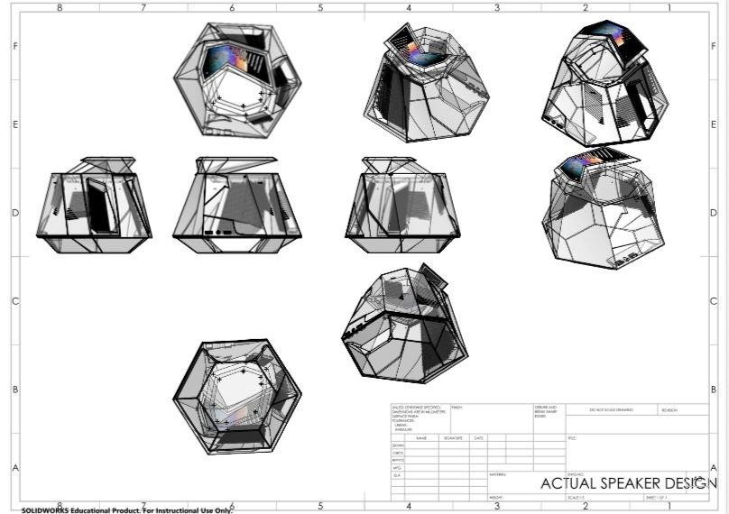
My first university design project, revisited to see how a simple geometric form becomes a considered decision through iteration.
Port placement was the deliberate choice: reachable and easy to use, without leaving the speaker open to damage. The clay model validated how it sat in the hand rather than how it looked.
- Year
- 2023
- Discipline
- First university project
- Role
- Research · Data collection · Form analysis · Concept design · CAD
- Tools
- SOLIDWORKS · KeyShot · Sketching


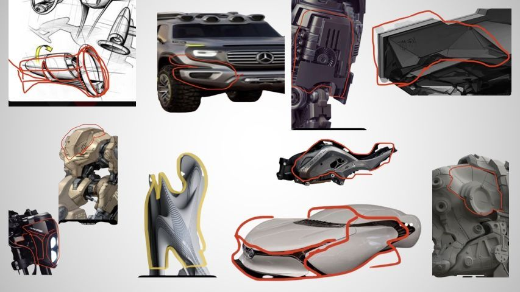
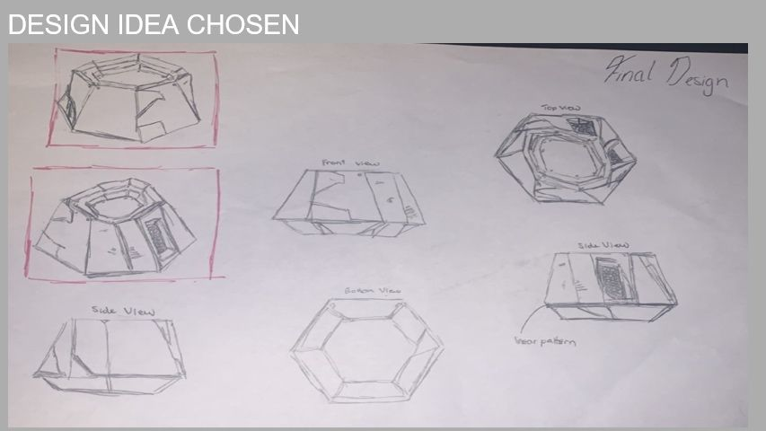
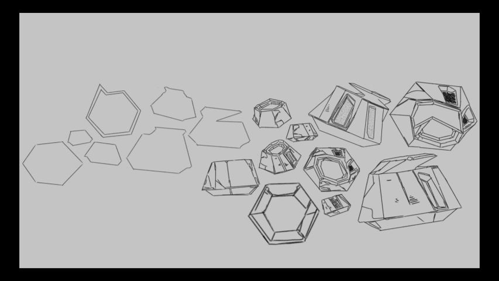
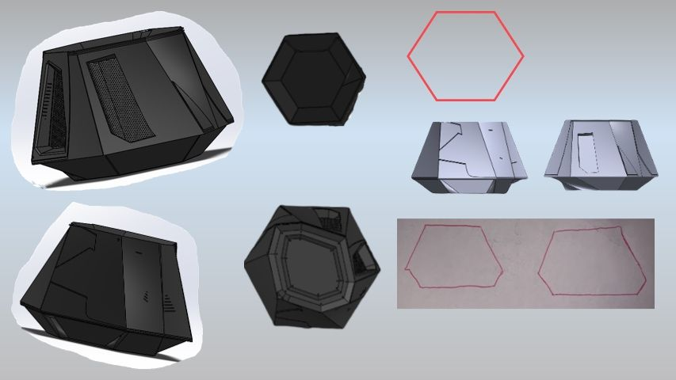
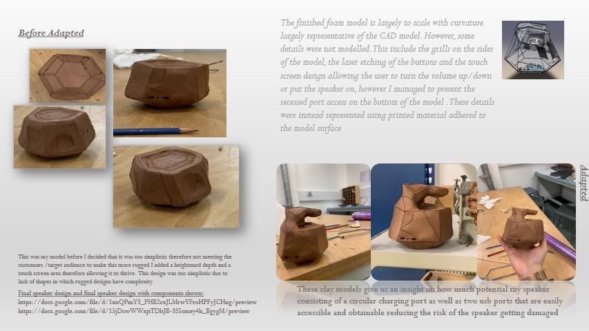

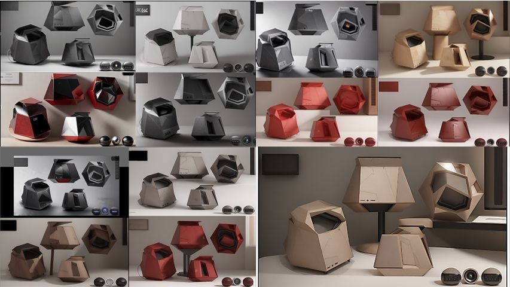
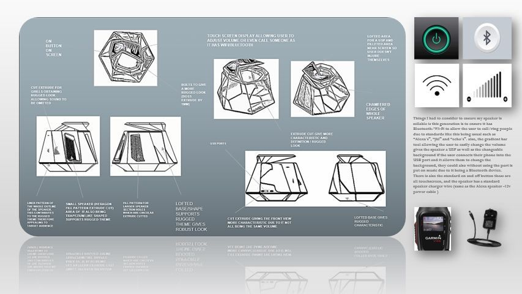

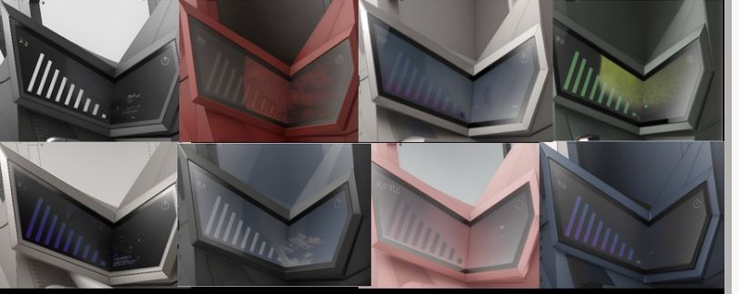


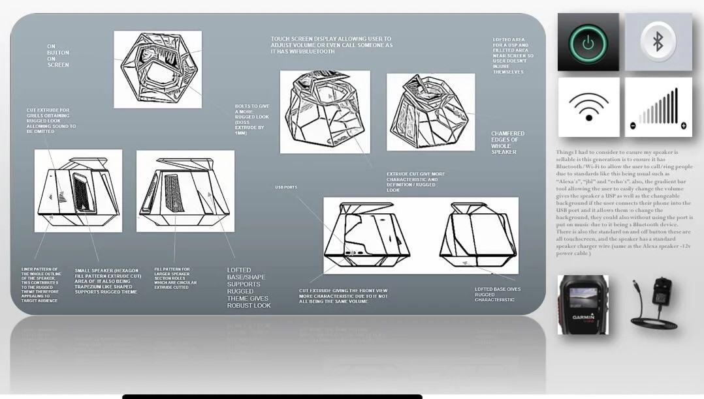
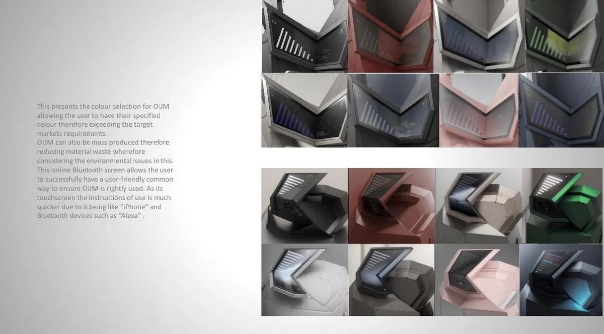
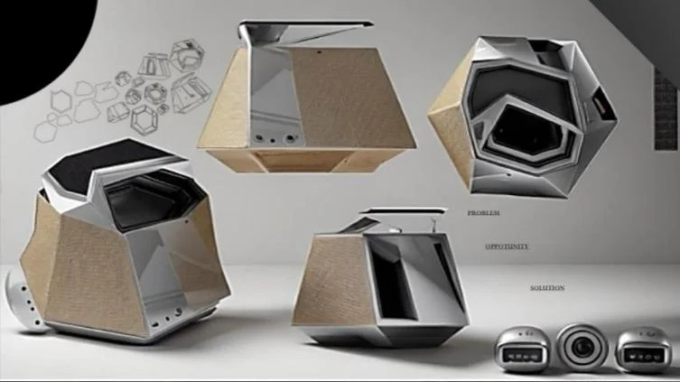
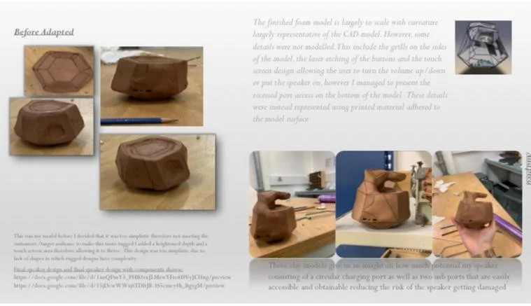
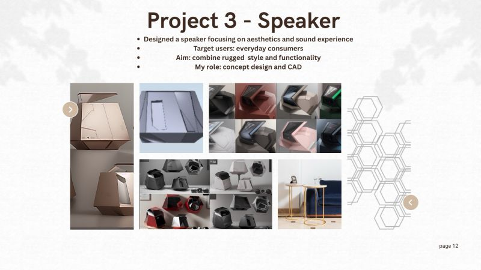
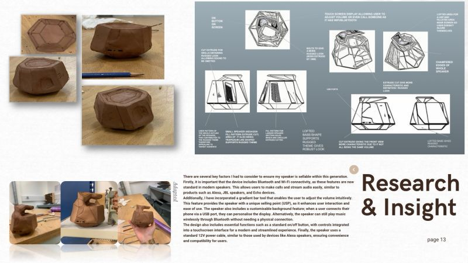

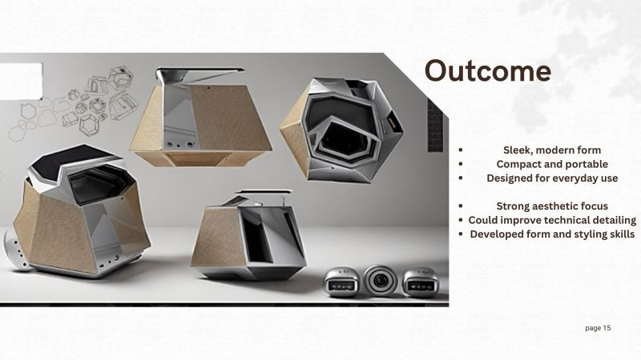
23 images · First university project · 2023